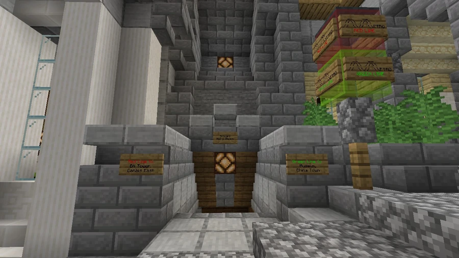
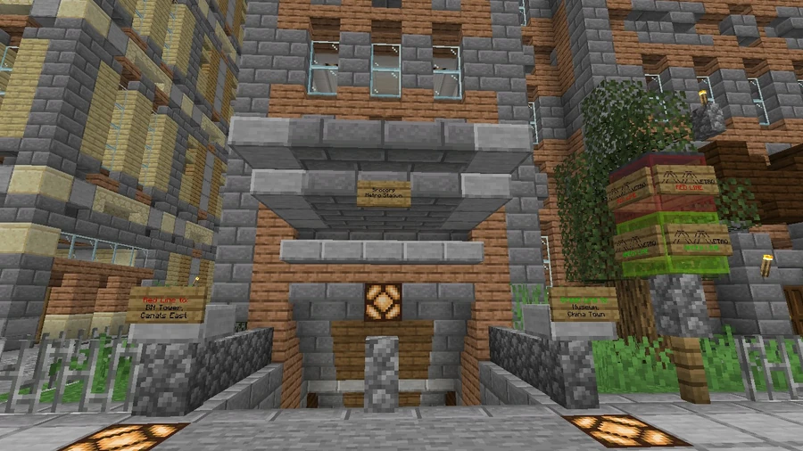
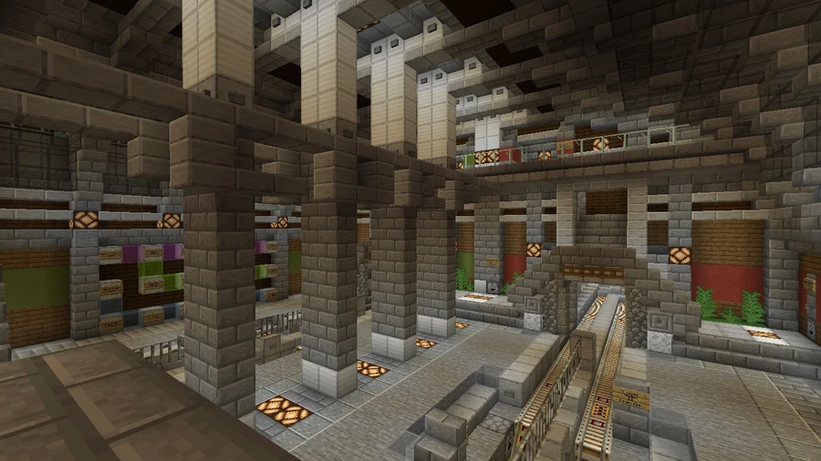

Brocorp Metro Station
−249, 46, 1806
A Downtown station near the BroCORP tower, beneath the Bank of Broville. It connects the Green and Red metro lines and has three street entrances.
Location and connections
Brocorp station lies at the center of Broville, in Downtown, near the BroCORP tower. It is an interchange between the Green and Red Lines of the metro, providing access to routes toward Museum, Chinatown, Canal East and BN Tower.
Three entrances
- Bro Street: to the right of the Bank of Broville.
- Brah Way: to the left of Brobucks.
- Lombard Street: in front of Broville City Hall.
Although the entrances appear on different sides of the bank and its surroundings, the station itself lies directly beneath the Bank of Broville.
Security beneath the bank
The proximity of the vault leads to very frequent inspections inside and around the station. The stated purpose is to prevent attempts to break into the vault from the underground infrastructure.
Gallery









See also
Sources and references
- v11.4.4 maps, signs, books and items World records
- Brocorp Metro Station · Broville Wiki Community archive
Text adapted and expanded from Brocorp Metro Station (contributors and history, revision 5016). Adapted text is available under CC BY-SA 3.0.